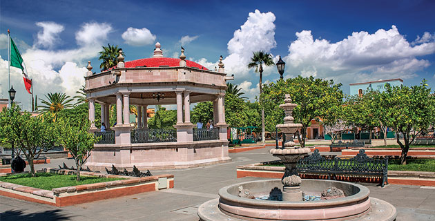
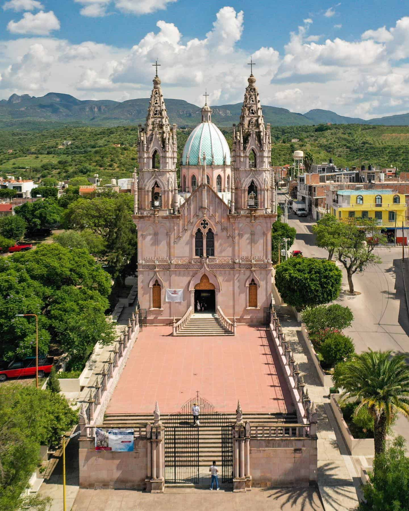
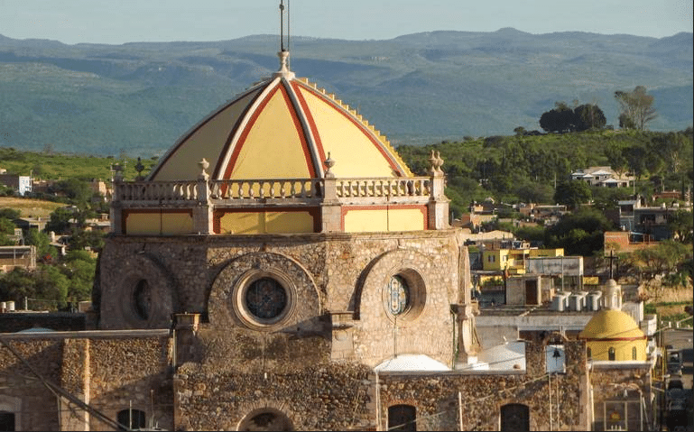
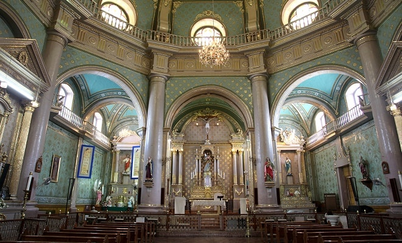
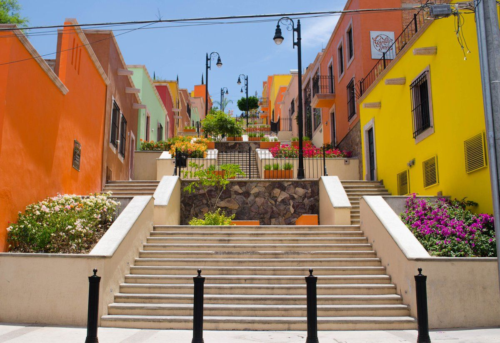

Lugares Imperdibles
Descubre la magia en cada rincón de Calvillo. Añade tus favoritos para armar tu ruta.

Plaza Principal y Kiosco
El corazón de Calvillo. Ideal para relajarse y disfrutar de una nieve artesanal.


Templo del Señor del Salitre
Construido en el siglo XVIII, cuenta con una de las cúpulas más grandes de América Latina.

Interior de la Parroquia
Descubre el hermoso altar principal y los detalles arquitectónicos únicos.

Complejo Santa Cruz
Recinto monumental con una cruz gigante y la mejor vista panorámica del pueblo.

Gradas de San Judas Tadeo
Pintoresco callejón de escalinatas coloridas. Perfecto para fotografías.
Presa de Malpaso
Naturaleza, paseos en lancha y deliciosos restaurantes a la orilla de la presa.